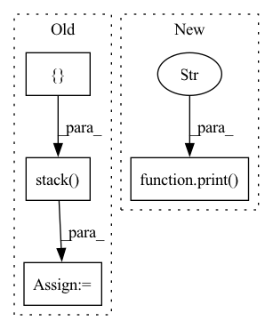

Pattern ID :6692

Before Change
for epoch in range(self.epochs):
loss = 0.0
pred_list = []
acc_list = []
tmp = float(self.t0 * np.power(self.t1 / self.t0, epoch / self.epochs))
self.elayers.train()
optimizer.zero_grad()
tic = time.perf_counter()
for gid in tqdm.tqdm(dataset_indices):
data = dataset[gid]
data.to(self.device)
prob, _ = self.explain(data.x, data.edge_index, embed=emb_dict[gid], tmp=tmp, training=True)
loss_tmp = self.__loss__(prob, ori_pred_dict[gid])
loss_tmp.backward()
loss += loss_tmp.item()
pred_label = prob.argmax(-1).item()
pred_list.append(pred_label)
acc_list.append(pred_label == data.y)
optimizer.step()
duration += time.perf_counter() - tic
accs = torch.stack(acc_list, dim=0)
acc = np.array(accs).mean()
print(f"Epoch: {epoch} | Loss: {loss} | Acc : {acc}")
else:
with torch.no_grad():
After Change
optimizer.step()
duration += time.perf_counter() - tic
print(f"Epoch: {epoch} | Loss: {loss/len(x_dict)}")
print(f"training time is {duration:.5}s")
def forward(self,
x: Tensor,
In pattern: SUPERPATTERN
Frequency: 3
Non-data size: 4
Instances
Fragment ID: 23008735
Project Name: divelab/dig
Commit Name: 7bc976472260abbe590320af2f499da668c5e0cb
Time: 2021-04-28
Author: 1161283769@qq.com
File Name: dig/xgraph/method/pgexplainer.py
M Class Name: PGExplainer
N Class Name: PGExplainer
M Method Name: train_explanation_network(2)
N Method Name: train_explanation_network(2)
M Parent Class: nn.Module
N Parent Class: nn.Module
M File Name: dig/xgraph/method/pgexplainer.py
N File Name: dig/xgraph/method/pgexplainer.py
M Start Line: 390
M End Line: 455
N Start Line: 581
N End Line: 622
'>
Before Change
reservoir.forward = self.eprop._decorate_hidden_forward(reservoir.forward, reservoir.name)
output_layer.forward = self.eprop._decorate_forward(output_layer.forward, output_layer.name)
for _ in progress_bar:
x_pred = []
x_pred.append(self.true_time_series[:, 0, :].clone())
forward_tensor = self.true_time_series[:, 0, :].clone().to(reservoir.device)
hh = None
for t in range(1, self.true_time_series.shape[-2]):
forward_tensor, hh = unpack_out_hh(reservoir(forward_tensor, hh, t=t-1))
forward_tensor, _ = unpack_out_hh(output_layer(forward_tensor, None, t=t-1))
x_pred.append(forward_tensor)
// eligibility_traces = dy_dw_local(y=forward_tensor, params=self.params)
// self.eprop.eligibility_traces = eligibility_traces
// batch_loss = self.eprop.apply_criterion(forward_tensor, self.true_time_series[:, t].to(forward_tensor.device))
// learning_signals = self.compute_learning_signals(loss_at_t)
// errors = self.eprop.compute_errors(forward_tensor, self.true_time_series[:, t])
// learning_signals = self.eprop.compute_learning_signals(errors)
// self.eprop.update_grads(errors, batch_loss)
forward_tensor.detach_()
hh = recursive_detach(hh)
// if t % self.update_each == 0:
// self.eprop._make_optim_step()
self.eprop._make_optim_step()
x_pred = torch.stack([t.cpu() for t in x_pred], dim=1)
pvar = PVarianceLoss()(x_pred, self.true_time_series.to(x_pred.device))
mse = torch.nn.MSELoss()(x_pred, self.true_time_series.to(x_pred.device))
progress_bar.set_postfix({"pvar": to_numpy(pvar).item(), "MSE": to_numpy(mse).item()})
pvars.append(to_numpy(pvar).item())
After Change
val_x_pred = self.model.get_prediction_trace(inputs)
pvar = PVarianceLoss()(val_x_pred, self.raw_time_series.to(val_x_pred.device))
val_pvars.append(to_numpy(pvar).item())
print(f"Validation PVariance: {np.mean(val_pvars):.3f}")
return x_pred, self.raw_time_series
def compute_learning_signals(self, error: torch.Tensor):
learning_signals = []
'>
Fragment ID: 23008732
Project Name: neurotorch/neurotorch
Commit Name: da8d4065502c761ccf6e28e47dd189e3b5488140
Time: 2023-01-31
Author: 50332514+JeremieGince@users.noreply.github.com
File Name: src/neurotorch/learning_algorithms/debug_e_prop_v5.py
M Class Name: SimplifiedEpropFinal
N Class Name: SimplifiedEpropFinal
M Method Name: train(4)
N Method Name: train(4)
M Parent Class:
N Parent Class:
M File Name: src/neurotorch/learning_algorithms/debug_e_prop_v5.py
N File Name: src/neurotorch/learning_algorithms/debug_e_prop_v5.py
M Start Line: 120
M End Line: 153
N Start Line: 115
N End Line: 144
'>
Before Change
client_val_dataset = dataset_test.create_tf_dataset_for_client(client_id)
train_data = []
train_labels = []
val_data = []
val_labels = []
for train_sample in client_train_dataset:
train_data.append(torch.Tensor(train_sample["pixels"].numpy()))
train_labels.append(train_sample["label"].numpy())
train_data = torch.stack(train_data,0)
train_labels = torch.Tensor(train_labels)
for val_sample in client_val_dataset:
val_data.append(torch.Tensor(val_sample["pixels"].numpy()))
val_labels.append(val_sample["label"].numpy())
val_data = torch.stack(val_data,0)
val_labels = torch.Tensor(val_labels)
Client_EMNIST_Dataset_train = (train_data,train_labels)
Client_EMNIST_Dataset_val = (val_data,val_labels)
After Change
os.makedirs(os.path.join(self.root, "test"), exist_ok=True)
dataset_train, dataset_test = load_emnist(self.root, only_digits=self.only_digits)
print("Start generating datasets...")
if self.split in ["train","val"]:
rand_client_ids = np.random.permutation(len(dataset_train.client_ids))
for i in tqdm(rand_client_ids):
train_path = os.path.join(self.root,"train", "EMNIST_client_{}.pt".format(i))
'>
Fragment ID: 23008727
Project Name: mloptpsu/fedtorch
Commit Name: 7577f1e2efbce9c4cc0bbd149ec88313f35f1cf6
Time: 2021-01-23
Author: mohamadmahdi.kamani@gmail.com
File Name: fedtorch/components/datasets/loader/federated_datasets.py
M Class Name: EMNIST
N Class Name: EMNIST
M Method Name: download(1)
N Method Name: download(1)
M Parent Class: Dataset
N Parent Class: Dataset
M File Name: fedtorch/components/datasets/loader/federated_datasets.py
N File Name: fedtorch/components/datasets/loader/federated_datasets.py
M Start Line: 92
M End Line: 143
N Start Line: 94
N End Line: 137